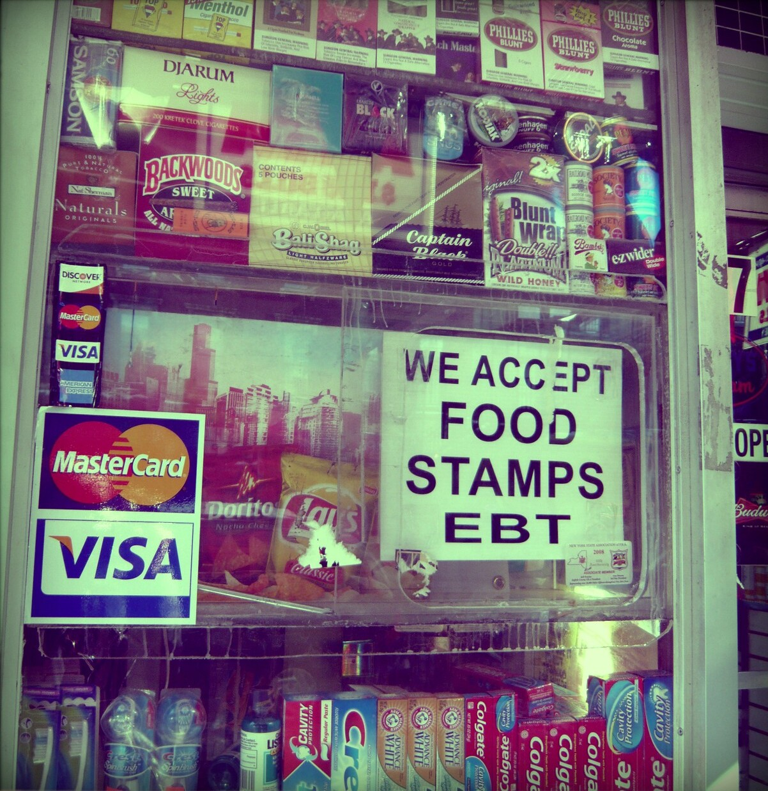

AQSh ijtimoiy yordam dasturlari: SNAP, WIC va TANF qanday ishlaydi
Past daromadli oilalarga moʻljallangan uchta asosiy federal dastur — SNAP (oziq-ovqat yordami), WIC (ayollar, chaqaloqlar va bolalar uchun ovqatlanish) va TANF (vaqtinchalik naqd yordam) — nima ekani, kim murojaat qila olishi va muhojirlar uchun qoidalar (besh yillik taqiq va 'public charge'ning 2026-yilgi oʻzgarishi) bilan tushuntirildi.

AQSh past daromadli oilalarga yordam beradigan bir nechta federal dasturga ega. Ularning uchtasi — SNAP (oziq-ovqat yordami), WIC (homilador ayollar, chaqaloqlar va kichik bolalar uchun ovqatlanish) va TANF (vaqtinchalik naqd yordam) — eng keng tarqalgani. Ushbu maʼlumotnoma ularning har biri nima ekanini, kim murojaat qila olishini va muhojirlar uchun qanday qoidalar amal qilishini faqat tasdiqlangan maʼlumotlar asosida tushuntiradi. Dasturlar federal darajada belgilanadi, biroq koʻpincha shtatlar tomonidan boshqariladi, shuning uchun aniq shartlar shtatdan shtatga farq qilishi mumkin (Manba: USDA Food and Nutrition Service; Benefits.gov).
SNAP — oziq-ovqat yordami (ilgari «food stamps»)
SNAP (Supplemental Nutrition Assistance Program) — AQShdagi eng yirik oziq-ovqat yordami dasturi; ilgari u «food stamps» deb atalgan. Uni federal darajada AQSh Qishloq xoʻjaligi vazirligining Oziq-ovqat va ovqatlanish xizmati (USDA Food and Nutrition Service, FNS) nazorat qiladi, amalda esa shtatlar boshqaradi — ariza shtat yoki mahalliy SNAP idorasiga beriladi. Yordam har oy EBT (Electronic Benefit Transfer) kartasiga yuklanadi va u debet kartasi kabi USDA ruxsat bergan doʻkon va supermarketlarda ishlatiladi. Asosiy shart — uy xoʻjaligining yalpi oylik daromadi federal qashshoqlik chegarasining 130 foizidan oshmasligi (chegirmalardan keyingi sof daromad esa 100 foizdan oshmasligi). SNAP mablagʻiga non, meva-sabzavot, goʻsht, baliq, sut mahsulotlari hamda oziq-ovqat beruvchi urugʻ va koʻchatlar olish mumkin; spirtli ichimlik, tamaki, vitamin va dori, issiq tayyor ovqat va oziq-ovqatga aloqasi boʻlmagan maishiy mahsulotlarni olib boʻlmaydi. 2025-moliya yilida dasturdan har oyda oʻrtacha qariyb 42 million amerikalik (aholining taxminan 12 foizi) foydalangan; bir kishiga oʻrtacha oylik yordam taxminan 185–190 dollarni tashkil etgan (Manba: USDA FNS; USDA Economic Research Service; Congressional Research Service R42505).
WIC — ayollar, chaqaloqlar va bolalar uchun
WICning toʻliq nomi — «Ayollar, chaqaloqlar va bolalar uchun maxsus qoʻshimcha ovqatlanish dasturi» (Special Supplemental Nutrition Program for Women, Infants, and Children). Uni ham USDA FNS moliyalashtiradi, mahalliy darajada esa shtat WIC agentliklari amalga oshiradi. Dastur past daromadli homilador hamda yaqinda tuqqan va emizikli ayollar, chaqaloqlar va besh yoshgacha boʻlgan bolalarga moʻljallangan — daromad meʼyoriga mos keladigan va ovqatlanish boʻyicha xavf ostidagilar uchun. WIC maxsus ovqatlanish toʻplamlari (sut, non, mevalar va boshqalar), ovqatlanish boʻyicha maslahat, emizishni qoʻllab-quvvatlash hamda tibbiy va boshqa xizmatlarga yoʻllanma beradi. 2024-moliya yilida dasturdan har oyda oʻrtacha qariyb 6,7 million kishi foydalangan; WIC AQShdagi barcha chaqaloqlarning taxminan 41 foizini qamrab oladi (Manba: USDA FNS — WIC; USDA Economic Research Service; CBPP).

TANF — vaqtinchalik naqd yordam
TANFning toʻliq nomi — «Muhtoj oilalarga vaqtinchalik yordam» (Temporary Assistance for Needy Families). U past daromadli oilalarga naqd pul yordamini beradi va bu yordam, odatda, ish bilan bogʻliq talablarga (work requirements) bogʻlanadi. Dasturni AQSh Sogʻliqni saqlash va aholiga xizmat koʻrsatish vazirligi (HHS), aniqrogʻi uning Bolalar va oilalar boshqarmasi (Administration for Children and Families, ACF) blok-grant shaklida moliyalashtiradi; har bir shtat grant doirasida oʻz dasturini tuzadi, shu bois yordam miqdori va qoidalar shtatlar boʻyicha keskin farq qiladi. TANF 1996-yilda qabul qilingan farovonlik islohoti qonuni (PRWORA) bilan tashkil etilgan va avvalgi AFDC dasturining oʻrnini egallagan. Federal qoidaga koʻra, tarkibida kattalar boʻlgan oilaga TANF naqd yordami umr davomida eng koʻpi bilan 60 oy (besh yil) berilishi mumkin; shtatlar qiyinchilikdagi oilalar uchun yuklamaning 20 foizigacha istisno qoʻyishi yoki qisqaroq muddat belgilashi mumkin (Manba: CBPP; Congressional Research Service R44668).
Muhojirlar uchun qoidalar
Bu dasturlarning koʻpi faqat «malakali muhojirlar» (qualified immigrants) uchun ochiq. Koʻpgina doimiy yashash huquqiga ega shaxslar (grin-karta egalari) SNAP, TANF, Medicaid, CHIP yoki SSIni olishdan avval besh yil kutishi kerak («besh yillik taqiq»). Bu kutishdan ozod etilganlar: qochqinlar (refugees), boshpana olganlar (asylees), deportatsiyadan saqlangan shaxslar, baʼzi inson savdosi qurbonlari, amerasianlar hamda Iroq/Afgʻoniston maxsus immigratsion vizasi (SIV) egalari. SNAP boʻyicha, shuningdek, 18 yoshgacha boʻlgan grin-karta egasi bolalar, nogironlik nafaqasini oluvchilar va 40 ish choragini toʻplaganlar ham kutishsiz huquqli boʻladi. Hujjatsiz muhojirlar SNAP, TANF yoki favqulodda boʻlmagan Medicaidga haqli emas. WIC esa «malakali muhojir» maqomini talab qilmaydi. Muhim jihat: AQSh fuqarosi yoki grin-karta egasi boʻlgan bola ota-onasi huquqli boʻlmasa ham SNAP, Medicaid, CHIP va WICni olishi mumkin — huquq har bir shaxs boʻyicha alohida belgilanadi va ota-ona oʻz immigratsion maqomi yoki SSNsini oshkor qilmasdan bola nomidan ariza bera oladi (Manba: National Immigration Law Center; USDA FNS — SNAP noncitizen eligibility).
«Public charge» qoidasi (2026-yil yangilanishi)
«Public charge» — baʼzi grin-karta yoki viza arizachilariga nisbatan qoʻllaniladigan baho boʻlib, shaxsning kelgusida davlat yordamiga ogʻir bogʻliq boʻlib qolishi ehtimolini koʻrib chiqadi. Bu qoida vaqt oʻtishi bilan oʻzgargan. 2022-yilgi qoidaga binoan faqat naqd yordam (masalan, TANF, SSI) va uzoq muddatli davlat hisobidan parvarish hisobga olingan; SNAP, WIC va uzoq muddatli boʻlmagan Medicaid hisobga olinmagan. 2026-yil 18-sentyabrda kuchga kirgan yangi DHS/USCIS qoidasi esa har qanday daromad testiga asoslangan yordamni — jumladan Medicaid, CHIP, SNAP, WIC, TANF, SSI, davlat uy-joy yordami va oliy taʼlim moliyaviy yordamini — bahoda bitta omil sifatida koʻrib chiqishi mumkin. 2026-yil 18-sentyabrdan oldin olingan yordam hisobga olinmaydi; faqat shu sanadan keyin olingani eʼtiborga olinishi mumkin. Favqulodda Medicaid, 21 yoshgacha bolalar uchun Medicaid va homiladorlikka oid Medicaid odatda baribir hisobga olinmaydi. «Public charge» qochqinlar va boshpana olganlarga nisbatan qoʻllanmaydi; bolaning oʻz yordami esa ota-onaning bahosiga yozilmaydi. Qoidalar oʻzgarib turgani sababli murojaatdan oldin rasmiy manbalarni (USCIS, USDA FNS) yoki malakali huquqshunosni tekshirish zarur (Manba: USCIS — Public Charge alert; Federal Register 2026-14539; KFF).
Qayerga murojaat qilinadi
SNAP va TANF arizalari yashash shtatining ijtimoiy xizmatlar idorasi (human/social services) orqali beriladi — koʻp shtatlarda onlayn, telefon yoki shaxsan. WIC uchun mahalliy WIC klinikasiga murojaat qilinadi. Federal Benefits.gov portali qaysi dasturga huquqli boʻlishingizni dastlabki baholashga yordam beradi, biroq yakuniy qaror shtat idorasida chiqariladi. Ariza berish bepul; yordam olib berish evaziga pul talab qiladigan «vositachi»lardan ehtiyot boʻlish kerak (Manba: Benefits.gov; USDA FNS).
Nega bu muhim
Bu dasturlarning qanday ishlashini bilish yangi kelgan oilalarga oʻz huquqlarini tushunishga yordam beradi: qaysi yordam oziq-ovqatga, qaysi biri naqd pulga tegishli, kim murojaat qila oladi va muhojir maqomi nimaga taʼsir qiladi. Ushbu maqola faqat tasdiqlangan qoida va raqamlarni keltiradi; baho va talqinlar bermaydi. Aniq shartlar shtat va sana boʻyicha oʻzgarishi mumkin, shuning uchun eng soʻnggi maʼlumot uchun rasmiy manbalarga tayaning.

Manbalar
- USDA Food and Nutrition Service — SNAP
- USDA Economic Research Service — SNAP Key Statistics
- USDA Food and Nutrition Service — WIC
- USDA Economic Research Service — WIC Program
- Center on Budget and Policy Priorities — TANF
- Congressional Research Service — TANF (R44668)
- National Immigration Law Center — Immigrants and public benefits
- USCIS — Public Charge Ground of Inadmissibility (2026 guidance)
- U.S. Benefits portal